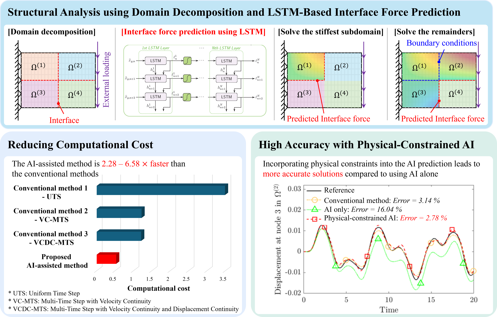
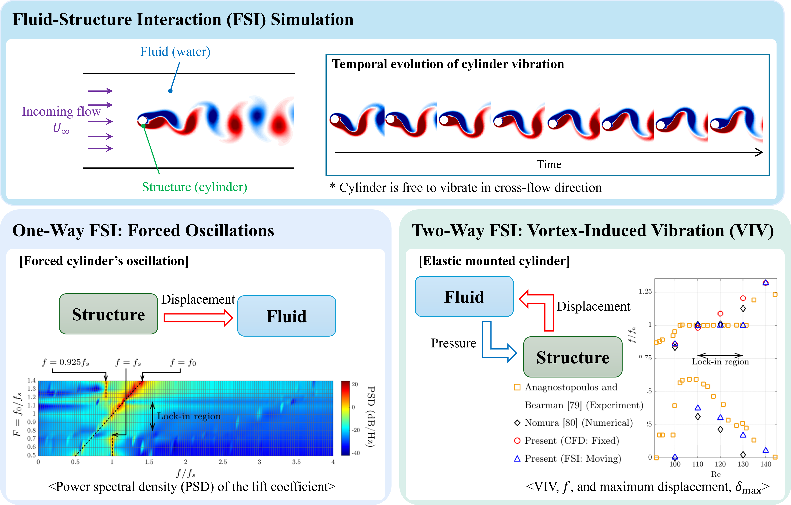

1. ML for Accelerating Simulation
시뮬레이션 속도 및 정확도를 향상을 위해 머신러닝 및 딥러닝을 활용한 수치해석 기법 개발

구조, 다중물리 및 동역학 해석을 위한 인공지능 기반 전산역학 기술
시뮬레이션 속도 및 정확도를 향상을 위해 머신러닝 및 딥러닝을 활용한 수치해석 기법 개발

유체-구조 상호작용에 의한 와류 유발 진동(Vortex-Induced Vibration, VIV) 해석

다중스케일 모델링을 통한 시뮬레이션 속도 및 해석 정확도 향상
안정적이고 효율적인 동적 해석을 위한 고급 시간 이산화 기법 개발